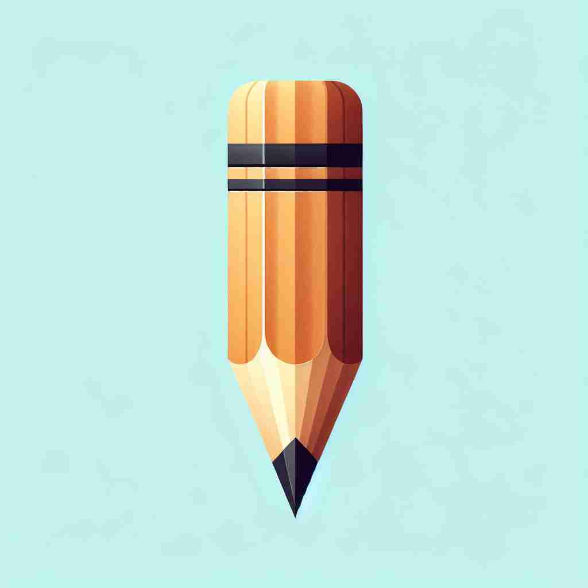

💬 The point of the needle is very sharp.

💬 The point of the pencil is sharp and ready to write.
🔈 [pɒɪnt]
🗝️ n. a sharp end or tip of something
🖼️ 在一个裁缝店里，裁缝正盯着缝纫机的针尖，确保针的尖端足够锋利，以便更好地穿透织物。这展示了‘point’作为某物的尖端或尖端的含义。
🔍 想象'point'是一个尖锐的末端。这个核心含义可以延伸到空间位置、时间节点、主要观点、得分单位，以及指向或瞄准的动作。无论是具体还是抽象的概念，都可以联想到这个'尖点'的形象，帮助你更好地理解和记忆'point'的多重含义。
💬 The point of the needle is very sharp.
💬 The point of the pencil is sharp and ready to write.
🌳 词根 "point" 源自拉丁语 "punctum"，意为 "尖" 或 "点"。这个词主要表示 "尖端、点、要点" 等含义。
💡 记忆 "point" 可以通过联想小的尖点（像针尖）来记忆，它也是议论中最核心的 "要点"。通过这种视觉化的方式，便于理解单词的含义。
🗝️ n. a particular place or position
🖼️ 在繁忙的地铁站，一个旅行指南正用地图给游客指示，一个标志性建筑的位置。他手指着一个特定的位置，说：‘这里就是你要去的地方。’这描述了‘point’作为一个特定地点或位置的含义。
💬 We'll meet at this point on the map.
❓ 想象空间中的一个尖点
🗝️ n. a particular moment in time
🖼️ 在一个熙熙攘攘的办公室里，项目经理正与团队讨论项目的进度。他指着甘特图上的一刻，说：‘到这个时间点，我们需要完成阶段一。’这表明‘point’作为特定时刻的含义。
💬 At this point in the story, the hero faces a difficult decision.
❓ 时间轴上的一个尖点
🗝️ n. the main or essential idea
🖼️ 在课堂上，老师正在讲解一篇复杂的文章，学生们聚精会神地听着。老师总结道：‘文章的核心观点是要珍惜时间。’这展示了‘point’作为主要或基本思想的含义。
💬 What's the main point of your argument?
❓ 论点如同一个突出的尖点
🗝️ n. a unit of scoring in a game or competition
🖼️ 在激烈的篮球比赛中，观众们屏息以待。一位球员在最后一刻投篮入网，赢得了关键的一分，欢呼声响起。‘point’在这里表示游戏或比赛中的得分单位。
💬 Our team scored 10 points in the last quarter.
❓ 得分如同在记分牌上标记一个点
🗝️ v. to aim or direct towards a target
🖼️ 在射箭场上，一名弓箭手正在调整姿势。他用箭头精准地对准靶心，全神贯注。这描述了‘point’作为指向或瞄准目标的动作。
💬 He pointed the gun at the target.
❓ 用尖端对准目标
🗝️ v. to indicate or show by extending one's finger
🖼️ 在一个儿童博物馆里，一个小男孩兴奋地用手指着展柜中的恐龙化石，对妈妈说：‘看！这只恐龙真大！’这展示了‘point’作为用手指指示或展示事物的动作。
💬 She pointed to the exit sign.
❓ 用手指的尖端指向